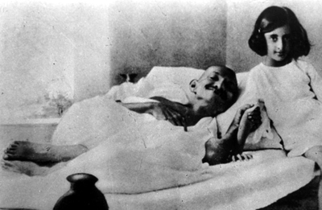
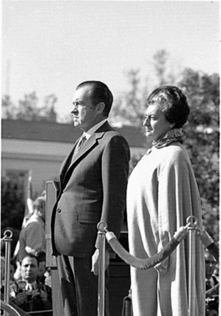

“Ulusun hizmetinde ölsem bile, bundan gurur duyardım. Kanımın her damlası, bu ulusun büyümesine katkıda bulunacak, onu daha da güçlü ve dinamik hale getirecektir.”
Indira Gandhi
Güney Asya’nın kaygan siyaset zemininin en bilinen kurbanlarından biridir Indira Gandhi. Her mecliste siyasetin konuşulduğu bir ortamda doğan Indira, ömrü boyunca bu yoldan ayrılmamış, ölümü de bu uğurda olmuştur. Hindistan’ın ilk başbakanı ve aynı zamanda ulusal kahramanlarından olan Cevahir Lal Nehru’nun kızından başka ne beklenebilirdi ki?
Hindistan’ın bağımsızlık sürecinde aktif rol almış bir ailede büyüyen Indira, sanıldığının aksine Hindistan’ın efsanevi lideri Mahatma Gandhi’nin soyadını almamış, ama bu büyük sivil direnişçiyi daha küçük yaşta kendisiyle hasta yatağında fotoğraf çektirebilecek kadar yakından tanıma fırsatı bulmuştu.

Indira Gandhi, küçük bir kız iken Mahatma Gandhi ile
Babasıyla birlikte rol aldığı siyaset sahnesinde ülkesinin dördüncü ve ilk kadın başbakanı olarak tarihe geçen Indira, bağımsızlığını yeni kazanmış bir ülke olan Hindistan’ın Pakistan ile ilişkilerinin düzelmesinde ve özellikle tarım alanında gelişmesinde büyük rol oynadı. Birkaç kez siyasetten uzaklaştırılmasına rağmen politik dünyadan hiçbir zaman tamamen kopmayan bu hırslı kadın, bölgede kurduğu dengelerle dünya siyasetinde etkin bir rol üstlendi. Son yıllarında Sihlerle yaşadığı sorun, ölümünün de başlıca sebebi oldu.
Siyasetle yoğrulmuş bir ailenin mensubu olarak politik hayattan hiç kopmayan, oğlunu yine bu uğurda kurban veren Indira, sadece Hindistan’ın değil, bölgenin çehresinde yaptığı değişikliklerle, dünyayı değiştiren kadınlar arasına girdi...
Maması siyaset olan bebek...
Indira, 19 Kasım 1917’de Hindistan’ın kuzeyindeki Utter Pradesh eyaletinin Allahabad kentinde, babası Cevahir ve annesi Kamala’nın tek çocuğu olarak dünyaya geldi. Hindistan politik yaşamının nabzını tutan ailenin lokomotifi, ünlü bir avukat olan dede Motilal Nehru’ydu. Dede Nehru aynı zamanda İngiliz sömürgesine karşı çıkan milliyetçi eğilimli Hindistan Ulusal Kongresi’nin önde gelen isimlerinden biriydi. Baba Cevahir Lal Nehru da benzer politik renklere sahip Hindistan Bağımsızlık Hareketi’nin lideriydi.
Indira doğduğu sırada babası, Mahatma Gandhi önderliğindeki harekete katılmıştı. Yoğun bir siyasi trafik içinde hayata gözleri açan Indira, işte böyle bir ortamda büyüyecekti. Evlerinde birçok siyasi toplantı yapılıyor, Allahabad’a gelen önemli kişiler hep onlarda kalıyordu. Ziyarete gelenler arasında Hindistan’ın efsane lideri Mahatma Gandhi de vardı. Bu küçük boylu adam, büyük düşünceleriyle, küçük Indira’yı derinden etkileyecekti. Gandhi’nin destansı pasif direniş hareketini başlattığı Sabarmati Ashram’a gerçekleştirdikleri ziyaret de Indira’nın düşüncelerini önemli ölçüde şekillendirecekti. Burada gördüğü milliyetçi duygulardan çok etkilenmişti.
Daha küçücükken, ölüm orucu tuttuğu sırada Mahatma Gandhi’nin yatağının başucuna oturarak fotoğraf çektirecek kadar siyasetle iç içeydi. Biraz büyüdüğünde ise genç kızlar ve erkeklerin oluşturduğu Vanara Sena hareketini kurdu ve Hindistan Bağımsızlık Hareketi’nde kısmen de olsa etkili oldu. Yürüyüşler ve gösteriler düzenliyor, Kongre üyelerinin gizli dokümanlarının taşınmasına yardım ediyordu. İddialara göre, babasının polis tarafından izlendiği bir dönemde önemli bir belgeyi okul çantasına koyarak dışarı kaçırmıştı.
On sekiz yaşındayken annesini tüberküloza kurban veren Indira, Hindistan’ın önde gelen okullarında başladığı eğitimini İngiltere’de tamamlayacaktı. Avrupa’da eğitim gördüğü sırada Kongre Üyesi Feroze Gandhi ile tanıştı ve 1941 yılında evlendi. O artık, kocasının soyadını alarak Indira Gandhi olmuştu. Bir yıl sonra kocasıyla birlikte Mahatma Gandhi’nin başlattığı ‘Quit India’ hareketinin ön saflarındaydılar. Lakin kısa süre sonra, 243 gün kalacakları demir parmaklıkların arkasına kapatıldılar. 1944’te ilk çocukları Rajiv, bir yıl sonra da Sanjay dünyaya geldi.
Halkla kucaklaşıyor...
Indira Gandhi, Pakistan ile yollarının ayrıldığı 1947’de, bu ülkeden Hindistan’a gelen göçmenlere yardım etti; milyonlarca göçmene barınma ve sağlık hizmetlerinden yararlanma imkânı sağlanması için adeta kendini paralayarak, ülkesinde adından çokça söz ettirdi. Bu, onun kamuoyuyla bu kadar iç içe olduğu ilk vaka idi.
Gandhiler, Feroze’nin bir sigorta şirketinde ve Kongre Partisi’nde çalışması sebebiyle Allahabad’da yaşıyorlardı. Başlangıçta iyi giden evlilikleri, Indira’nın, Hindistan bağımsızlığını kazandıktan sonra Başbakan olan babasına yardım etmek için Yeni Delhi’ye gitmesiyle bozulmaya başladı. Onun için öncelikli olan, siyasi kulvardı. Babasının hem hemşiresi, hem sekreteri, hem de danışmanı olmuştu. Babasıyla birlikte resmi konutta kalan Indira, birçok yurtdışı ziyaretinde ona eşlik etmiş, iktidarın nasıl bir şey olduğunu iliklerine kadar hissetmişti. Bu arada çocukları kendisiyle birlikte kalıyor; ancak evli olmalarına rağmen Feroze ile ayrı yaşıyorlardı.
Bağımsız Hindistan’ın ilk genel seçimleri 1951’de yapıldı. Indira, seçim döneminde, adaylıklarını koyan babasına ve ayrı yaşamalarına rağmen kocasına yardım etti. Her ikisi de seçimi kazandı ve Feroze Yeni Delhi’ye geldi. Buna karşın çift ayrı yaşamaya devam etti. Feroze, hükümetteki yolsuzluklara karşı savaş açmıştı ve sigorta sektöründe çok büyük bir usulsüzlük ortaya çıkardı. Bu skandal, Başbakan olan kayınpederinin kabinesindeki Maliye Bakanı’nın istifasıyla sonuçlandı. Bu gergin dönemde Indira ve Feroze boşandılar. Ancak Feroze’nin kalp krizi geçirmesiyle, ikilinin arasında yeniden yakınlaşma oldu. Indira, iyileşmesi için bir süre Keşmir’de kocasının yanında kaldı. Feroze’nin bir süre sonra hayatını kaybetmesiyle ise bu evlilik fiilen sona ermiş oldu. Artık Indira’nın hayatında sadece siyaset olacaktı.
Indira, 1959 ve 1960’ta iki kez Ulusal Kongre’nin Başkanı seçildi. Ancak babası, akrabalarını kayırıyor gibi görünmek istemiyordu. Indira bu yüzden 1962’deki seçimlere katılmadı. Bununla birlikte 27 Mayıs 1964’te babası hayatını kaybedince, yeni Başbakan Shastri’nin ısrarıyla seçimlere katılarak Enformasyon ve Yayıncılık Bakanlığı’na atandı.
Bu arada ülke de karışmaya başlamıştı. Hindistan’ın güneyinde Hintçe konuşulmayan eyaletlerde, resmi dilin Hintçe yapılması üzerine başlayan isyanlar sebebiyle Madras’a gitti, isyanları bastırdı ve olaylardan etkilenen bölgelerin yeniden inşası için çalışmalarda bulundu. Shastri ve birçok bakan, Indira’nın gölgesinde kalmışlardı. Indira giderek sivriliyordu...
Pakistan ordusu kapıda, Indira tatilde
1965 Hindistan-Pakistan Savaşı patlak verdiğinden Indira, Srinagar bölgesinde tatil yapıyordu. Yardımcılarının, Pakistan askerlerinin çok yakınlarda olduğu yönündeki uyarılarına rağmen orada kalıp yerel yönetimleri organize etmeyi tercih etti.

Indira Gandhi, ABD Başkanı Nixon ile
Başbakan Shatsri, Sovyetler’in arabuluculuğuyla Pakistan’la barış anlaşmasına imza attıktan birkaç saat sonra Taşkent’te öldü. Kongre Partisi’nin Lideri Kamaraj, Başbakan olması için Indira’ya destek veriyordu. Parlamentoda yapılan seçimde rakibi Morarji Desai’ye karşı üstünlük sağlayan Indira, 1966 yılında Hindistan’ın dördüncü ve ilk kadın başbakanı oldu. Uzunca bir süre bahçesinde dolaştığı iktidarın kapısından nihayet içeri girmişti.
Indira’nın Başbakanlığı o kadar da kolay geçmiyordu. Kongre’de birlik yoktu; rakibi Desai, kendisini kuklalıkla suçluyordu. Bu çekişme, partinin 1967 seçimlerinde 60 sandalye kaybetmesine sebep oldu. Indira, uzlaşma sağlamak için Desai’yi Başbakan Yardımcısı ve Maliye Bakanı olarak atasa da parti bölünmekten kurtulamadı. Sosyalist Parti’nin verdiği destekle iktidarda kalan Indira, bu dönemde bankaları millileştirdi.
Indira Hindistan’ı nükleer güç yapıyor
Soğuk Savaş rüzgârlarının kesintisiz estiği 1971’de düşman kardeşler Hindistan ile Pakistan bir kez daha boğaz boğaza gelmişlerdi. Bu kez Amerika, Hindistan’ın, Batı Pakistan’dan ve Keşmir’den uzak durmasını sağlamak amacıyla, 7. Filo’yu Bengal Körfezi’ne gönderdi.
Madem büyük güçlerden biri bastırıyordu, o halde durum diğeriyle dengelenmeliydi. Indira da aynı dönemde benzer hamleler yapmış orta karar ülkelerin liderlerini takip etti ve Sovyetler’le yakınlaşmaya başladı. Kremlin’in desteğiyle 1971 Savaşı’nı Hindistan kazandı. Bu arada Çin Halk Cumhuriyeti’nden gelen nükleer tehdit ve Amerika ile Rusya’nın, Pakistan-Hindistan gerginliğini çözmedeki sınırlı etkisi, Indira’daki “kendi ayaklarımız üzerinde durmalıyız” fikrini güçlendirecekti. Düğmeye bastı: Hindistan nükleer güç olacaktı.
1974 yılında yeraltında ‘Gülümseyen Buda’ isimli başarılı bir nükleer deneme gerçekleştiren Hindistan, dünya kamuoyunu şok ediyordu. Nükleer denemenin tamamen barışçıl amaçlarla gerçekleştirildiğini açıklayan Hindistan, nükleer kulübe katılarak, komşusu Pakistan üzerinde büyük bir avantaj elde etmişti. Artık Hindistan’a yan gözle bakmak, o kadar kolay olmayacaktı. ‘Nükleer Indira’, bu dönemde Pakistan Cumhurbaşkanı Zülfikar Ali Butto’yu bir haftalık bir zirve için Shimla’ya davet etti. Zirve sonunda iki ülke, Keşmir sorununun barışçıl yollarla çözülmesini öngören bir anlaşma imzalayacaktı.
Hindistan-Pakistan ilişkilerine kadın eli değiyor
Şüphesiz Indira ile birlikte Hindistan-Pakistan ilişkilerinde yeni bir sayfa açılmıştı. Her ne kadar ülkede Keşmir’in Pakistan’dan ayrılması gerektiğine ve hükümetin sınır kontrolünü sağlamlaştırmadığına yönelik eleştiriler ayyuka çıksa da, imzalanan anlaşma ve nükleer koz, Pakistan’dan gelebilecek saldırı ihtimalini azaltmıştı. İki ülke arasındaki ticari ilişkiler normale döndü.
Ülkesinin ‘karnını doyurdu’
Indira, 1960’lardan itibaren tarıma büyük yatırım yapmıştı. Hindistan, ‘karnını doyurmak’ için Amerika’ya bağlı bir ülke olmaktan kurtulmuş ve gıda ihraç eden bir ülke konumuna gelmişti. Tarımda yaşanan bu ‘Yeşil Devrim’, süt sektöründe yaşanan ‘Beyaz Devrim’le daha da perçinlendi. ‘Gıda Güvenliği’ programı, halkın Indira’ya verdiği desteğin başlıca nedenlerinden biriydi.
Indira 1971 seçimlerine, bu icraatlarının sağladığı avantajın yanı sıra fakirliğe karşı yürüttüğü savaşın kendisine verdiği güçle girecekti. Halkın kalbini ve zihnini kazanmakta oldukça başarılı olmuştu. Lakin ‘iktidar insanı bozar’dı. Ve bu şaşmaz gerçek, Indira için de geçerli olacaktı...
Halkın kalbinden ayaklar altına
Parlamentoda ezici bir çoğunluğa sahip olan Indira, bu sayede anayasada düzenlemeler yapma yoluna gitti ve iç politikada köklü değişikliklere imza attı. Uygulanmaya başlanan federal sistemle, merkezi yönetim ve eyaletler arasındaki güç dengesinde önemli değişiklikler oldu. Bu dönemde muhalefet, Indira’yı ‘otoriter politika uygulamakla’ suçlamaya başlamıştı. Hindistan’ın bağımsızlığını kazanmasında ön saflarda yer almış isimler, hükümete karşı tavır alıyordu. Ülkedeki politik iklim 1973’ten itibaren tamamen değişmişti. Enflasyonu, yolsuzluğu ve bozulan ekonomiyi protesto eden kitleler sokaklara dökülmeye başladı. İşler hiç de iyi gitmiyordu.
Haziran 1975’te Allahabad Yüksek Mahkemesi, son seçimde yolsuzluk yaptığına hükmederek, Indira’nın milletvekilliğinin düşürülmesi kararını aldı. Indira temyize başvurdu, ancak muhalefet istifa etmesini istiyor, ülkede büyük çaplı gösteriler düzenleniyordu. Indira’nın Yeni Delhi’deki evi ve parlamento büyük bir kalabalık tarafından kuşatılmıştı. Yoksa kariyerine parlak ışıklarını gönderen güneşi batıyor muydu?
Indira: “Madem öyle, o halde olağanüstü hal”
Köşeye sıkıştığını hisseden Indira, Cumhurbaşkanı Fahruddin Ali Ahmed’e baskı yaparak ülkede olağanüstü hal ilan edilmesini sağladı. Birçok muhalif isim tutuklanarak hapse gönderildi, bunlar arasında bağımsızlık sürecinde İngiltere tarafından hapsedilmiş milliyetçi isimler de vardı. Halk, bundan hiç ama hiç hoşlanmayacaktı...
Olağanüstü hal ilan edilmesiyle ‘dünyanın en kalabalık demokrasisi’ Hindistan, bir anda diktatörlüğe dönüşmüştü. Polise geniş yetkiler tanınmış, olağanüstü hal yasalarıyla bütün muhalif kurumlar ve isimler susturulmuştu. Ortalığın sütliman olmasıyla 1977’de seçimler yapıldı. Ancak baskı altına alınan halk, “Yeter, söz milletin!” diyerek, Indira’ya okkalı bir siyasi şamar indirdi. Muhalifi Desai’nin Janata Partisi seçimlerden galip çıktı. Desai’nin ‘ya demokrasi ya da diktatörlük’ söylemiyle yürüttüğü seçim kampanyası işe yaramıştı. Indira meclis dışı kaldı. Bir sonraki seçime kadar, ‘işsiz, maaşsız ve de kimsesiz’ kalacaktı. Ama pes etmeye niyeti yoktu. Öyle ya da böyle, Gandhi soyadını taşıyordu...
Küllerinden yeniden doğuyor
1978 seçimleri öncesinde tüm şartlar Indira’nın aleyhineydi. Ana muhalefet partisi olmasına rağmen Indira’nın Kongre Partisi iyice küçülmüş, Janata’ya geçenler olmuştu. Lakin bir anda tarih, Indira’nın lehine işlemeye başlayacaktı. Zamanında Indira’yı ağına düşüren iktidar sarhoşluğu, bu sefer de Janata hükümetini etkisi altına almakta gecikmemişti.
Kırılgan koalisyon yapısından dolayı ülkeyi yönetmekte zorlanan Janata hükümeti, asılsız suçlamalarla Indira hakkında tutuklama emri çıkarttı. Bu, Indira’nın otomatik olarak parlamento dışında kalması anlamına geliyordu. Ancak iktidarın bu hamlesi geri tepecek ve siyasette oldukça büyük bir koz olan ‘mazlum olma hali’, Indira’nın imdadına yetişecekti. Neredeyse her şeye sıfırdan başlayan bu azimli kadın, uzun süren mahkeme süreci boyunca, iki yıl önce kendisinden tiran diye korkan halkın sempatisini yeniden kazanmayı başardı.
Janata Hükümeti’ninse Indira’ya duyduğu nefretten başka bir programı yoktu! Indira bu dönemde yeniden halkın karşısına çıkarak konuşmalar yapmaya başladı, olağanüstü hal döneminde yaptığı hatalardan dolayı açık bir dille özür diledi. Gün ağarmaya başlamıştı. 1979’da yapılan seçimlerde Kongre Partisi oyların büyük çoğunluğunu kazanarak yeniden iktidar oldu. Indira, yine Başbakan’dı...
Bu kez hedefte Sihler var
Indira Gandhi’yi, yeni döneminde en çok uğraştıran mesele, özellikle Pencap eyaletinin çoğunluğunu oluşturan Sihlerdi. Eylül 1981’de Sih militanlar, kendi kutsal mekânları Golden Temple (Altın Mabed) ve etrafındaki bölgeleri ele geçirmişlerdi. Mabette o sırada hac görevini yerine getirmekte olan binlerce sivil bulunmasına rağmen Indira, orduya hareket emri vererek mabedin ele geçirilmesini ve ayrılıkçı Sih lider Jarnail Singh Bhindranwale’nin öldürmesini istedi.
‘Mavi Yıldız Operasyonu’ ciddi ölçüde kanlı olmuş, 73 asker ve 492 Sih militanın yanı sıra, iki ateş arasında kalan çok sayıda sivil de ölmüştü. Operasyon tüm dünyada büyük tepki topladı. Indira, bir kez daha bazılarının nefretini üzerine çekmeyi başarmıştı! Ve kendisinden nefret edenlerden ikisi, yakın korumalığını yapan iki Sihti: Satwant Singh ve Beant Singh...
Korumaları tarafından öldürülen Başbakan
1984’ün 31 Ekim’i oldukça sıradan başlamıştı. Indira, Yeni Delhi’de Safdarjung Sokağı’nda bulunan Başbakanlık konutunda İrlanda televizyonu adına kendisiyle röportaj yapmaya gelen İngiliz aktör Peter Ustinov’u ağırlamaya hazırlanıyordu. Ustinov, Satwant ve Beant tarafından kontrol edilen bir kapıdan geçerek, Başbakan’ın kendisini beklemekte olduğu bahçeye çıktı. Gandhi, konuğunu karşılamak için ayağa kalktığında, Satwant ve Beant’in parmakları makineli tüfeklerinin tetiğine asıldı. Hayatları pahasına korumakla mükellef oldukları Gandhi’yi, 33 kurşunla öldürmüşlerdi. Hindistan’ın ilk kadın Başbakanı, yerde cansız yatıyordu. Cesedi 3 Kasım’da, Mahatma Gandhi’nin anısına yapılmış olan Raj Gal’da yakıldı.
Indira’nın ölümüyle Hindistan kaosa sürüklendi. Başta Yeni Delhi olmak üzere ülkenin birçok yerinde çıkan şiddet olaylarında binlerce Sih hayatını kaybetti, onlarca Gurudwaras (Sih ibadethanesi) yakıldı. Indira’nın oğlu Rajiv, çıkan olaylarla ilgili fikri sorulduğunda “Büyük bir ağaç devrildiğinde yer sallanmaya mahkûmdur” diyecekti. Olaylarda hayatını kaybeden 20 binden fazla Sih için kimse suçlu bulunmadı.
Büyük ağaç, kendisini Hindistan’ına adamış, yaptıklarıyla bölgesinde büyük değişikliklere imza atmıştı. Ve devrildiğinde çıkardığı gürültü, gerçekten de büyük olmuştu.
NOTLAR